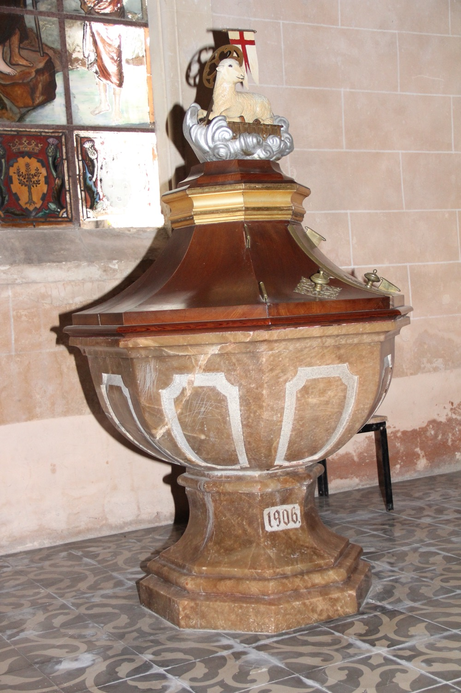

Pila baptismal del 1906 que substituí la pila baptismal antiga, de 1685, que es pot veure al costat del portal principal. Va ser dissenyada per Joan Miquel Sureda i Verí, marquès de Vivot i senyor de Sant Martí (qui també va ser l’autor del projecte de la façana actual de l’església de Santa Eulàlia de Palma) i tallada en marbre groc de Canyamel per Antoni Rotger. La corona una imatge de l’Anyell de Déu, en referència a les paraules pronunciades per sant Joan Baptista en el moment de batejar Jesús: "Aquest és l'anyell de Déu, el qui lleva el pecat del món”. La banderola amb una creu llatina vermella sobre fons blanc que l’acompanya és el símbol del triomf de Jesús sobre la mort i el pecat original.